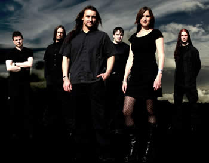

O Theatre of Tragedy pode ser considerada a banda
criadora do estilo Gothic Metal. Aplicando com pioneirismo e originalidade
o recurso da voz gutural, aliada aos vocais sopranos femininos.
Sua trajetória tem início em 1994,
quando foi lançado o primeiro trabalho demo com o mesmo
nome da banda. O álbum Theatre of Tragedy é
lançado apenas no ano seguinte, e é considerado
um clássico do Metal. A Hamlet For a Slothful Vassal
é a primeira música de grande sucesso incluída
no primeiro trabalho, e até hoje é essencial nas
apresentações ao vivo da banda. Assim, aos poucos
o espaço é conquistado na mídia, mas a aceitação
pelo público é imediata.
Raymond
Rohonyi é o principal compositor e responsável direto
pela inovação musical que o Theatre of Tragedy inseriu
no Metal. As canções de melodias sofisticadas e
arranjos ousados completam a temática das letras escritas
em inglês arcaico. Desta forma, o Theatre of Tragedy influencia
outros artistas a seguirem o mesmo caminho.
Em 1996 é lançado o segundo álbum
Velvet Darkness They Fear que também obteve grande
repercussão abrindo definitivamente as portas para que
o Theatre of Tragedy participasse de grandes festivais, e chegasse
aos ouvidos e corações dos fãs da "música
Gótica" e do Metal. Mais de 90.000 cópias foram
vendidas na Europa. A voz de Liv Kristine é uma das marcas
registradas da banda norueguesa; isso lhe renderia projetos solos
paralelos e participações especiais com Heavenwood
e Atrocity.
O terceiro álbum Aégis
é lançado em 1998 e chega a alcançar a 58ª
posição no ranking das mais executadas na Alemanha.
Neste álbum, a banda supera as próprias barreiras
e mostra uma sonoridade mais dinâmica, devido ao uso de
elementos e timbres da música eletrônica, além
das mudanças significativas nos duetos entre o vocal gutural
de Raymond e Liv. Talvez por isso, os fãs mais antigos
ficaram descontentes. Mas por outro lado, o Theatre of Tragedy
estendeu sua fama arrastando uma legião de fãs por
onde passava. Mostrando que essa postura adotada era adequada
para as pretensões da banda.
No álbum Musique foi consolidada
a proposta iniciada em Aégis. Os arranjos que oscilavam
entre o clássico e eletrônico e o estilo próprio
do Theatre of Tragedy, ficaram evidentes nas faixas deste trabalho.
Sendo assim, a banda agradou também os ouvintes de outros
estilos, e ganhou novos admiradores.
A faixa Image ganhou um clipe e divulgou
esta música para todo o mundo. Na seqüência
da carreira, a banda parte para uma turnê européia,
e confirma a condição de uma grande banda do gênero.
No início de 2002, lançam o álbum Closure
Live, que foi uma conquista para os músicos. Em março
do mesmo ano, chega às lojas o disco Assembly.
A banda Theatre of Tragedy lançou, além
do primeiro trabalho demo, outros que intermediavam os álbuns
oficiais. A formação é: Liv Kristine Espenaes
(vocais), Raymond Rohonniy (vocais), Hein Frode Hansen (bateria),
Lorentz Aspen (teclados), Frank Claussen (guitarras) e Vegard
K. Thorsen (guitarras).
Porém,
em meados de 2003, a banda anuncia em seu site a saída
de Liv Kristine. A vocalista diz ter recebido a notícia
por e-mail, ter ficado chocada e sentindo-se traída pelos
outros integrantes. A justificativa apresentada pela banda é
de que havia divergências de idéias sobre os futuros
projetos. Liv Kristine continua sua carreira ao lado da banda
Leave's Eyes com muito sucesso também. A nova vocalista,
Nell (ex The Crest), faz sua estréia em uma apresentação
ao vivo na Noruega, em junho de 2004.
A banda faz shows por dois anos, e no final de
2005, se reúne para a gravação de um novo
disco. Então em 24 de fevereiro de 2006, é lançado
o primeiro single após a saída de Liv Kristine,
intitulado Storm.
Depois de exato um mês, é lançado
o álbum completo, de mesmo nome. A gravação
é uma das melhores qualidades de Storm, méritos
do produtor Rico Darum e de Greg Reely, que mixou o disco. A faixa
título é a melhor do repertório, seguida
de Silence, mas todas têm seus bons momentos. A
voz suave e delicada de Nell Sigland se encaixou perfeitamente
com o estilo da banda e os fãs aprovaram a nova integrante.
Nos meses seguintes a banda deu continuidade às
turnês e a nova formação com Nell se consolidou.
Porém, apenas em meados de 2009 surgem rumores a respeito
de um novo trabalho. Finalmente, em setembro, é lançado
Forever is the World.
O novo álbum traz dez faixas e mais duas
bônus que resgatam um pouco a sonoridade dos primeiros trabalhos,
trazendo algo mais próximo do Metal do que das viagens
eletrônicas dos discos mais recentes. O belo trabalho gráfico
da capa, produzido pelo artista Thomas Ewerhad é um dos
pontos de destaque.
Com mais de quinze anos de carreira, o Theatre
of Tragedy, responsável direto pelo surgimento do estilo
conhecido como Gothic Metal e uma das maiores referências
do metal, o Theatre of Tragedy não deixa de inovar a cada
ano e a cada álbum, mostrando-se como uma banda que caminha
à frente de seu tempo mas não esquece seu passado.
Por
Spectrum
Downloads
Disponíveis: